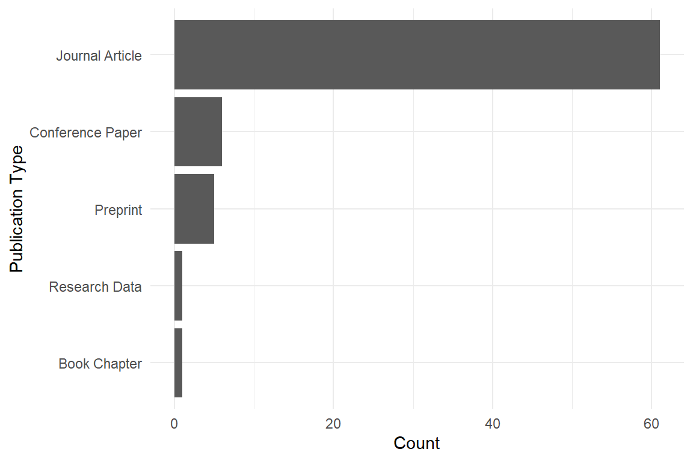
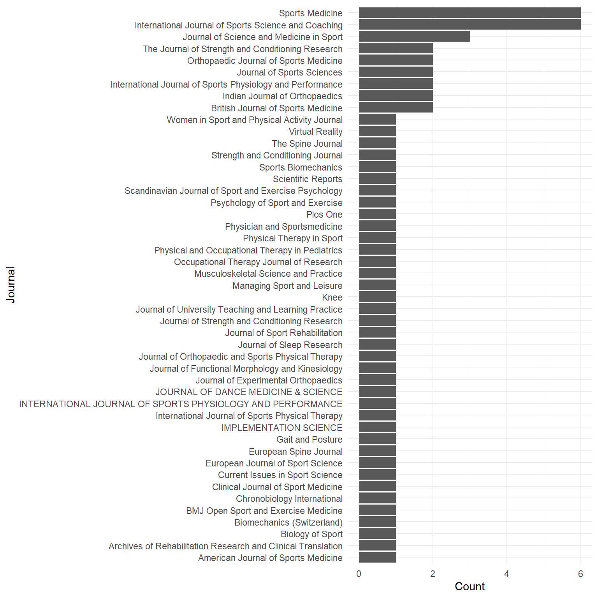

La Trobe Sport and Exercise Science
Research Output Reporting 2026
Note
Export run on 04/05/2026.
Version 1: reporting on research outputs in 2026.
Source: “My Publications”.
Types of research output
Where are we publishing?
